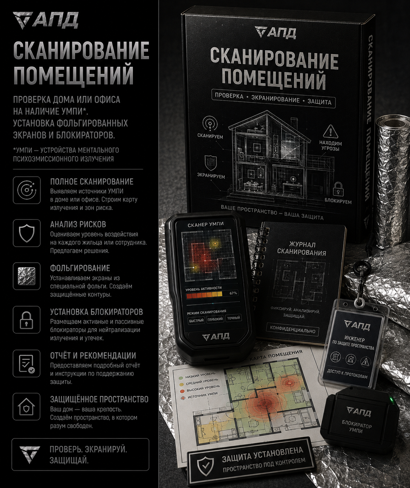

ТВЁРДОЕ ПЕНДОСОВСКОЕ ИЗЛУЧЕНИЕ (ТПИ)
ЭКЗ. № 1

1. Наименование и классификация
Твёрдое Пендосовское Излучение (ТПИ) — атмосферное излучающее образование контактного действия. В классификаторе НИИ ПРТ выделено в отдельную категорию материалов, требующих специального описания и регистрации.
2. Происхождение
Согласно внутренней версии АПД, образование искусственное. Разработано и применено противником в рамках эскалации Пендосовского Излучения (ПИ).
3. Внешний вид и строение
Образцы описываются как кристаллические образования неправильной формы, визуально напоминающие град. В отчёте выделены три условных структурных элемента:
- I — внешняя оболочка: ледяная матрица.
- II — излучающий слой: источник ТПИ.
- III — активное ядро: стабилизатор излучения.
4. Основные характеристики
| Форма | Неправильная, кристаллическая |
| Размер | Ø 8–30 мм; высота 6–25 мм |
| Масса | ≈ 0,5–15 г |
| Тип воздействия | Контактное (термическое + радиационное) |
| Интенсивность | Высокая, условно до 10³–10⁴ усл. ед. |
| Время поражения | Мгновенное (≤ 1 с) |
5. Описанный эффект воздействия
В рамках вымышленной классификации АПД контакт с образцом связывается с термическим повреждением тканей и условным воздействием высокой дозы ПИ. В отчёте отдельно отмечены возможные последствия, описанные как острая лучевая реакция и системные нарушения.
6. Рекомендации и вывод
Отчёт рекомендует избегать контакта с обнаруженными образованиями и передавать сведения о находках в соответствующее подразделение АПД. Документ подчёркивает необходимость дальнейшего изучения структуры и свойств ТПИ.